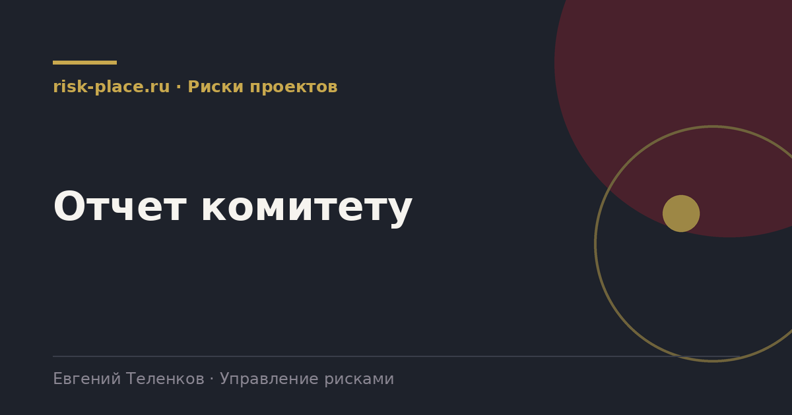

Главная · Библиотека · Риски проектов · Отчет комитету
Библиотека · Риски проектов
Комитет собирается на час. Раздел рисков в нем занимает десять минут. Их надо использовать на решения, а не на описание.

Порядок важен, он определяет, на что уйдет внимание.
Разница между этими двумя колонками определяет результат заседания.
| Так не работает | Так работает |
|---|---|
| Существует риск задержки поставки насосов | Прошу одобрить закупку резервного комплекта уплотнений на 4,2 млн, срок решения до 15 числа, иначе цикл изготовления не позволит успеть |
| Отмечается нехватка персонала у подрядчика | Прошу поручить дирекции по закупкам провести отбор дополнительного подрядчика на монтаж, срок две недели |
| Риски согласований остаются высокими | Прошу выделить куратора уровня заместителя генерального для сопровождения согласования в органе, без этого срок сдвигается на два месяца |
| Резерв расходуется быстрее плана | Прошу рассмотреть увеличение резерва на 60 млн либо сокращение содержания по позициям 4 и 7 перечня |
Решение комитета, записанное как «принять к сведению», означает, что решения не было. Формулировка должна содержать действие, ответственного и срок. Это кажется очевидным, но именно здесь теряется большая часть управленческого эффекта.
Вторая часть работы наступает после заседания. Поручения из протокола переносятся в перечень мероприятий по соответствующему риску, а на следующем заседании первым слайдом идет статус их исполнения. Комитет, который не проверяет исполнение собственных решений, за два-три заседания приучает всех, что его решения необязательны.
Частые вопросы
Одна форма для любого вопроса
Расскажем о ближайших датах, предложим формат под ваш состав участников и назовем порядок бюджета.
Предпочитаете почту — напишите на info@risk-place.ru. Адрес: Москва, улица Скаковая, 32с2.
 risk-
risk-